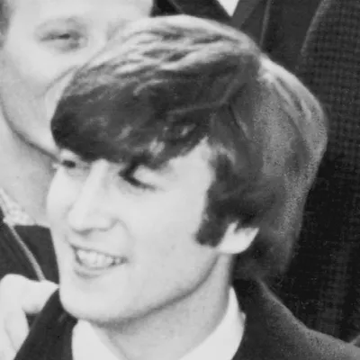
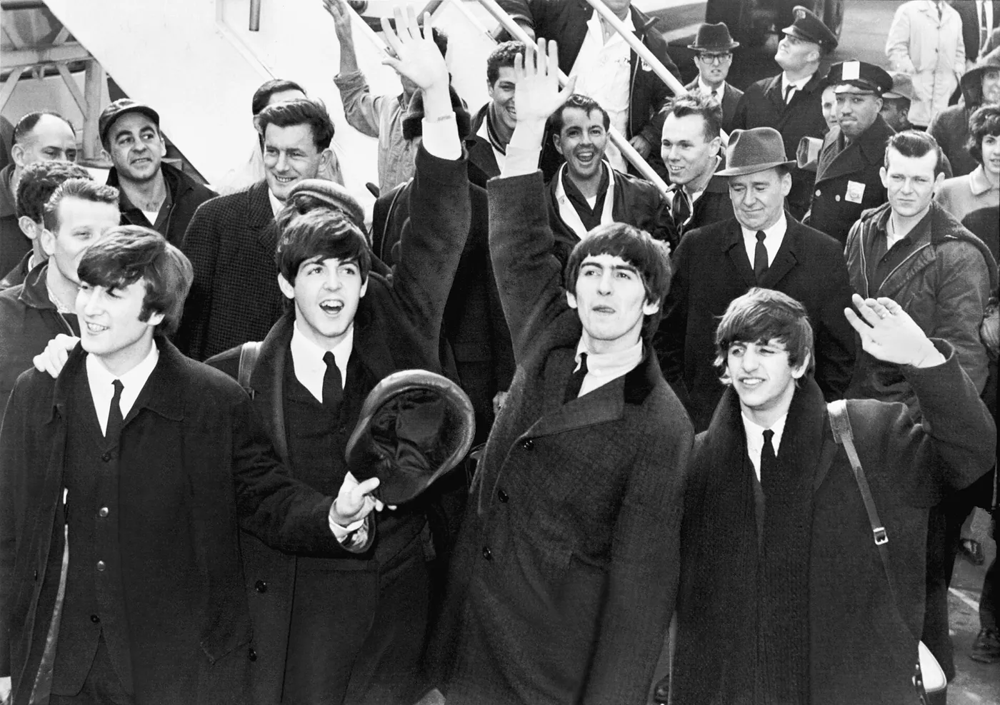
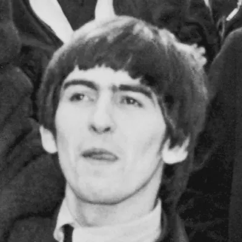
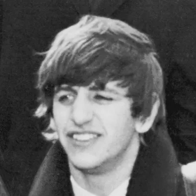

John Lennon
Rhythm guitar, vocals
Started the band as a teenager in Liverpool and wrote many of its songs with Paul.
Four musicians from Liverpool, eight years, and thirteen albums that changed popular music.
Explore the eras

Rhythm guitar, vocals
Started the band as a teenager in Liverpool and wrote many of its songs with Paul.
Bass, vocals
Joined John in 1957. Their songwriting partnership is credited as Lennon–McCartney.

Lead guitar, vocals
The youngest Beatle. He brought the sitar to rock and wrote "Something" and "Here Comes the Sun."

Drums, vocals
Replaced Pete Best on drums in 1962, completing the lineup the world knows.
1962–1965
Screaming crowds, matching suits, and a TV debut seen by about 73 million Americans.
1965–1967
They stopped touring and turned the recording studio into an instrument.
1968–1970
A double album, a rooftop concert, and one last walk across Abbey Road.